An extended visual programming bot mod for Luanti (formerly Minetest).
Vbots are single-block "turtle" style bots, programmable in an entirely visual way — no text typing required.
vbots2 adds conditional logic and quality-of-life improvements on top of the original visual-bots by Nigel Garnett
Conditional commands: — check blocks ahead, chest contents
Value comparisons: — compare variables/numbers
Variables A–D and — memory cells via signs (auto-creates if none ahead), item counting
command — stops program in main, returns from sub-programs
Chest interaction — build transfers one item ahead into chest (filter by item type); empty chests can be dug as blocks
Magnet pickup — auto-collects dropped items in 1-block radius; excess vanishes
Dirt equivalence — dirt and dirt_with_grass treated as same block in conditions
Editable bot name, crash fixes (formspec no longer crashes on bot move), inventory drops on removal
Punch an idle bot with an empty hand to start its program (or click the run icon in the menu).
Punch a running bot with an empty hand to stop it.
Right-click (double-tap on Android) to open the menu.
Dig the bot by hitting it with anything except an empty hand. Items in the bot's inventory will drop on the ground.
| Iron | Iron | Iron |
| Iron | Redstone | Iron |
| Iron | Iron | Iron |
→ 1 Vbot (inactive)
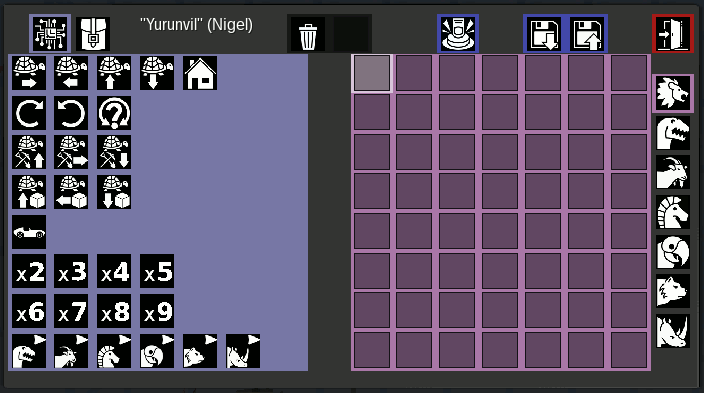
The commands and inventory
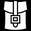
icons switch between the two panels.The command panel (left, shown above) contains all available commands. Click any command to add it to the current sub-program (the red area on the right).
The inventory panel shows the bot's inventory (top) and the player's inventory (bottom). Use this panel to give the bot building materials or take items it has collected.
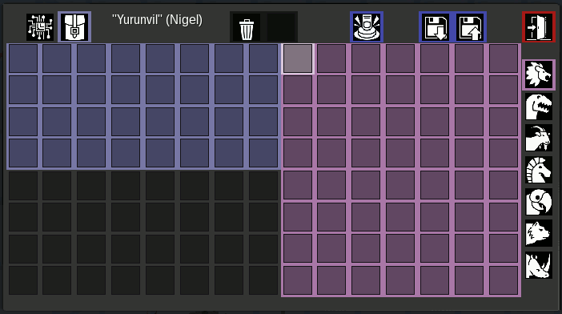
| Icon | Action |
|---|---|
| Trash | Deletes the last instruction on the current sub-program page |
| Run | Starts the program (same as punching with empty hand) |
| Save | Saves the current program and sub-programs under the bot's name |
| Load | Opens the load menu to choose, rename, or delete saved programs |
| Remove All | 1st press: stop all your bots. 2nd press (within 2s): destroy all your bots |
| Reset | Clears all programs (main + sub-programs) but keeps the inventory |
| Exit | Closes the menu |
The red panel on the right has 7 pages:
| Icon | Page |
|---|---|
| Main program — execution starts here | |
| Sub-program 1 | |
| Sub-program 2 | |
| Sub-program 3 | |
| Sub-program 4 | |
| Sub-program 5 | |
| Sub-program 6 |
Call sub-programs using the function icons at the bottom of the command panel.
| Icon | Command | Description |
|---|---|---|
| Move Forward | Move one step forward | |
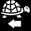 |
Move Backward | Move one step backward |
| Move Down | Move one step down | |
| Go Home | Teleport back to the position where the bot was placed | |
| Go to Player | Pathfind to owner player, stop 1 block away | |
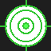 |
Go to Position | Pathfind to stored x,y,z coordinates (set via formspec) |
Movement fails if the destination is not empty. Gravity: the bot falls automatically if the block below is air (no flying).
| Icon | Command | Description |
|---|---|---|
| Turn Clockwise | Rotate 90° right | |
| Turn Anti-Clockwise | Rotate 90° left | |
| Turn Random | Rotate in a random direction |
| Icon | Command | Description |
|---|---|---|
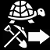 |
Dig Forward | Dig the block in front, then move into that space |
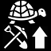 |
Dig Up | Dig the block above, then move up |
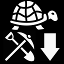 |
Dig Down | Dig the block below, then move down |
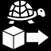 |
Build Behind | Place a block behind the bot |
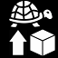 |
Build Up | Place a block above the position behind |
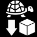 |
Build Down | Place a block below the position behind |
Building behavior:
If the target is air → places the first block from the bot's inventory
If the target is a chest/container (any node with container group) → transfers the first item from inventory (or matching item if filter is placed in next slot)
If no items in inventory → nothing happens
Digging & Pickup behavior:
Collected items go into the bot's inventory
Magnet: the bot automatically picks up any dropped items within 1-block radius on each tick
If inventory is full, excess items vanish (no ground drops to avoid pickup/drop loops)
Chests: empty chest → digs it as a block; non-empty chest → takes items (optional filter in next slot)
| Icon | Command | Description |
|---|---|---|
| Is block ahead? | Execute next command only if the block ahead matches | |
| Is NOT block ahead? | Execute next command only if the block ahead does NOT match | |
| Has item in chest? | Execute next command only if the chest ahead contains the specified item | |
| Value > Value? | Execute next if first value greater than second | |
| Value < Value? | Execute next if first value less than second | |
| Value >= Value? | Execute next if first value greater or equal | |
| Value <= Value? | Execute next if first value less or equal |
How conditions work:
A condition uses 3 slots in the program:
[ =? ] [ block ] [ command ] [ next... ]
(1) (2) (3) (4)
Slot 1 — the condition command ( or )
Slot 2 — the block to check for (place any block item here, e.g. Stone, Dirt)
Slot 3 — the command to execute if the condition is true
Slot 4+ — always executed
If slot 2 is empty, it checks for air (nothing ahead).
Special: dirt and dirt_with_grass (and their mcl_core: variants) are treated as the same block.
Value comparisons use 3 slots with active variable as left operand:
[ >? ] [ arg ] [ true-cmd ] [ after... ]
Left operand — the active variable (set by – before the comparison)
Slot arg — right operand: a number (–), a variable (A–D), or a block (= 1). Empty = 0.
Slot true-cmd — executed if comparison is true
If false, true-cmd is skipped, after executes
→ If var_a > 2: move forward, then turn right. Otherwise: only turn right.
| Icon | Command | Description |
|---|---|---|
| Var A | Select variable A as active | |
| Var B | Select variable B as active | |
| Var C | Select variable C as active | |
| Var D | Select variable D as active | |
| Load from sign | Read number from sign ahead into specified variable (creates sign if none) | |
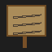 |
Write to sign | Write specified variable value to sign ahead (creates sign if none) |
| Count items | Count items of a type in inventory, store in active variable |
Variables as multipliers: place a variable after any command to repeat it that many times:
→ If var_a = 5, moves forward 5 times.
Loading variables:
Signs: → reads number from sign ahead into var_b
Count: [A] [count] + [Stone] → counts all stone in inventory, stores in var_a
Writing: → writes var_c value onto sign ahead
| Icon | Command | Description |
|---|---|---|
| F1 | Call sub-program 1 | |
| F2 | Call sub-program 2 | |
| F3 | Call sub-program 3 | |
| F4 | Call sub-program 4 | |
| F5 | Call sub-program 5 | |
| F6 | Call sub-program 6 | |
| End | Stop execution (in main) or return (from sub-program) | |
| Speed | Set bot step rate (use with number or variable) |
Speed: use with a number (–) or variable to set the bot's step rate. Without a multiplier, resets to normal speed (1 step/tick).
Place a number after a command to repeat it (N−1) additional times. Works with all commands. sets the bot's step rate multiplier.
Moves 4 spaces forward, turns 180°, moves 4 back to start, turns 180° to face original direction.
In sub-program 1 ():
In main ():
Calls the sub-program twice.
Check if the block ahead is NOT dirt — dig only non-dirt blocks:
+ [Dirt item]
Place a Dirt block (from your inventory) in the slot after .
If the block ahead is NOT dirt → dig it and move forward.
If it IS dirt (or dirt_with_grass) → just move forward (skip digging).
Mine forward in a loop, but stop when you hit stone:
+ [Stone item]
Place a Stone block in the arg slot after . With this looped program, the bot:
If ahead IS stone → hits END and stops forever
If ahead is NOT stone → skips END, digs, moves forward, goes home (loop continues)
+ [Stone] → If stone ahead: dig it and move forward. Otherwise: just move forward.
+ [Stone] → If chest ahead has stone: take one stone (bot stays in place, chest blocks movement). Otherwise: just move forward.
+ [Stone] → Count stone in inventory → var_a. If var_a > 3: stop. Otherwise: move forward.
→ Read number from sign ahead into var_b. Move forward var_b times.
→ If chest is ahead: transfers first item from inventory.
→ + [Stone]: transfers one stone to chest.
→ If no chest ahead: places a block behind the bot.
This mod is based on visual-bots (© 2019 Nigel Garnett).
Extended with conditional commands, chest interaction, variables, and various fixes.